O mapa
O que cada marca do mapa quer dizer.
O mapa só aparece dentro do santuário. F1 mostra e esconde; Ctrl+Shift+F1 reinicia se ele aparecer estranho.
Uma etiqueta com a dificuldade (Normal, Difícil, Pesadelo ou Caos) fica embaixo do minimapa do jogo, na tela toda, e no canto de cima à esquerda, na janela.
Visão geral
O santuário inteiro de uma vez
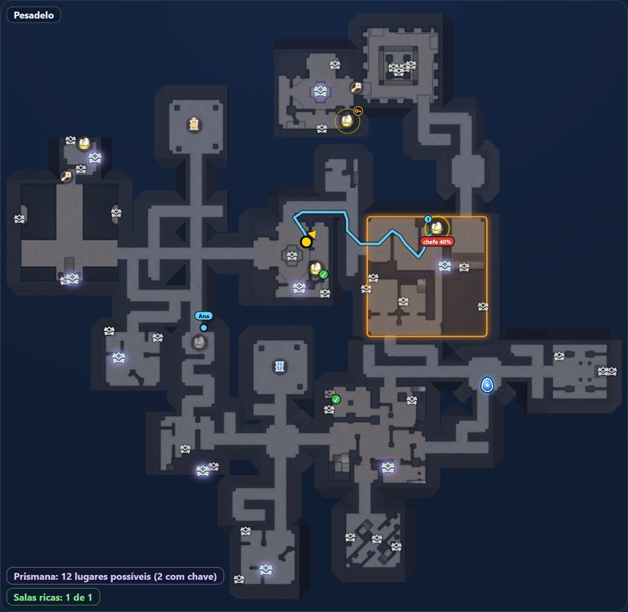
12345678910- Você. A seta amarela mostra onde você está e para onde olha.
- Ninho dourado. Ainda não foi revistado. O anel mostra a chance de haver ninho ali.
- Ninho em sala da chave. Anel com uma chave: a chance se você abrir a porta.
- Ninho com ✓ verde. Já foi revistado.
- Ninho cinza. Você esteve lá e nada surgiu: o app deduz que está vazio.
- Ovo no chão. Ovo azul com estrela, seu ou de um amigo.
- Rota. Linha azul pelos ninhos que faltam. O 1 é o próximo.
- Baú com brilho. Ainda pode dar o item Prismana.
- Sala rica. Contorno laranja: a sala com o melhor prêmio.
- Amigo. Ponto azul com o nome de quem está na sua equipe.
Ninhos
O que diz cada ninho
Todos os lugares de ninho aparecem, em qualquer dificuldade, e o mapa os atualiza conforme você joga.
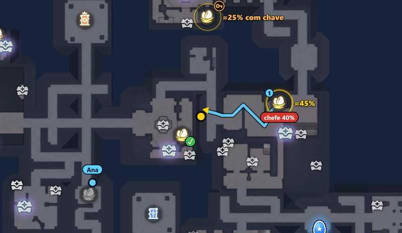
12345- Dourado, com anel. O anel é a chance de haver ninho ali nesta partida. Na tela toda aparece “≈45%” quando passa de 40%. É conta aproximada, por isso o “≈”.
- “chefe 40%”. A chance de o chefe estar naquela sala.
- “≈25% com chave”. A chance de o ninho existir se você abrir a porta. Ajuda a decidir se vale gastar a chave.
- ✓ verde. Já foi revistado. O app vê o ✓ no minimapa do jogo, inclusive o do amigo.
- Cinza. Você ficou 3 segundos a uns 6 metros e saiu da sala. Em 30 segundos não surgiu ovo nem ✓, e o app deduz que o lugar está vazio. Só passar perto não muda nada.
Sobrou um lugar só. É conta por eliminação, não certeza: por isso o anel é amarelo forte e não verde.
Ovo e rota
Para onde ir primeiro?

Rota
Linha azul pelos ninhos que você ainda não olhou. Os números 1, 2, 3 dão a ordem.
- Ninho de sala da chave fica fora da rota.
- Com a horda a caminho, a linha verde leva à saída mais perto.
Ovo no chão
Ovo azul com estrela, piscando. O app o vê no minimapa do jogo e marca onde você largou o seu.
Fica marcado até alguém pegar, e pode haver vários. O ovo que um amigo larga aparece no seu mapa.
Avisos
Avisos no alto da tela
Aparecem sozinhos, na hora certa.
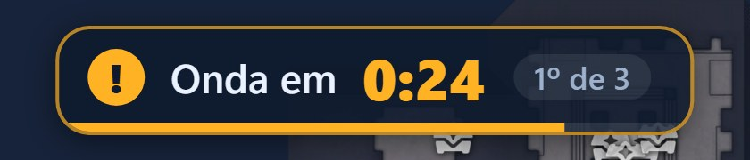
Onda em 0:24
Contagem até o próxima onda de monstros. São três, e o cartão diz qual: “1º de 3”.
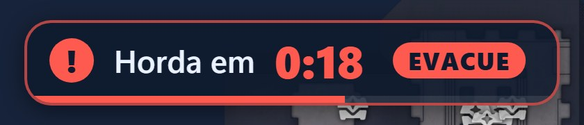
Horda em 0:18
A terceira onda é a horda. O selo “EVACUE” avisa: vá para a saída.
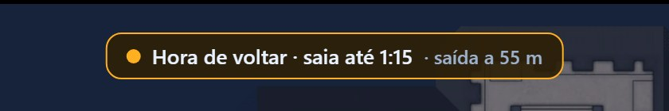
Hora de voltar
O tempo no relógio chegou perto do que se leva para andar até a saída mais próxima. A conta supõe passo lento: quem corre recebe o aviso cedo.
Os avisos de onda e de horda não somem com o mapa: aparecem sozinhos no alto, no centro da tela. No Normal e no Difícil o horário vem com “≈” e borda tracejada, porque ainda não foi conferido em partida.
Baús
Quais baús importam
Só os baús raros contam: são eles que podem dar o item Prismana.
- BrilhoBaú raro que ainda pode dar Prismana nesta partida. Cada baú raro aberto, seu ou do amigo, apaga o brilho dos que não podem mais.
- Baú abertoFica cinza com ✓: verde se foi você, branco se foi um amigo.
- Contadores no cantoNuma partida no Caos: “Prismana: 36 lugares possíveis (7 com chave)” e “Salas ricas: 0 de 2”. Baú fechado não aparece no minimapa, então passar pela sala não ensina nada ao app.

Sala rica
Contorno laranja: a sala com o melhor prêmio da partida, 1 no Pesadelo e 2 no Caos. O app só descobre qual é quando um baú raro dela é aberto.
Escolher quais baús aparecemEquipe
Amigos no mapa
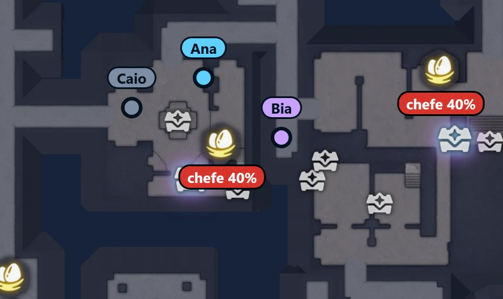
Só quem está na equipe
- Ponto azul com o nome. O segundo amigo aparece em lilás.
- Cinza quer dizer mais de 15 segundos sem posição: o ponto fica onde ele estava e um aviso diz quem perdeu o sinal.
- Amigo fora da tela vira uma seta na borda.
- Ninho olhado de perto e ovo largado por um de vocês aparecem no mapa do outro.
Andares
Andar de cima
Balcões e passarelas. Ao subir a escada, as passarelas do andar de cima aparecem mais fortes por cima do mapa. Ao descer, voltam ao normal sozinhas.
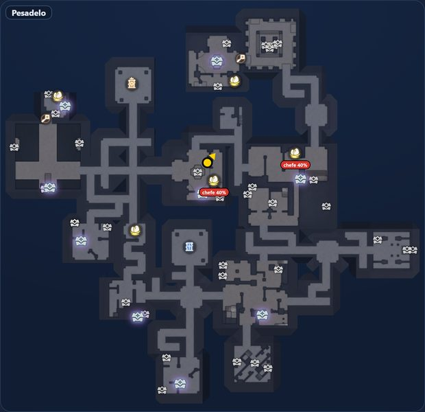
Antes de subir
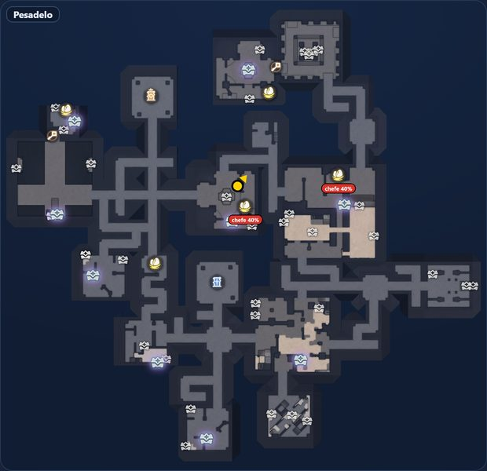
Depois de subir
Sem posição
O que significa “Procurando você”?
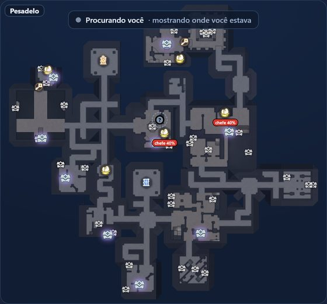
O app te perdeu dentro do santuário. Sua seta vira um ponto cinza com “?” no último lugar conhecido, e o aviso aparece no alto.
Costuma ser normal ao abrir o mapa do jogo, um menu ou ao carregar. Se o mapa aparecer cortado ou parado, use Reiniciar mapa (Ctrl+Shift+F1): ninhos, ovos e baús da partida continuam marcados.
Abriu a bolsa, um baú ou um menu, ou saiu do santuário? O mapa some e volta sozinho. O F1 esconde tudo.
Giro
Gira com você ou mapa parado?
Você escolhe na janela do app, em “Como o mapa se mexe”. Vale para a tela toda e para a janela pequena. Veja como mover e redimensionar a janela.
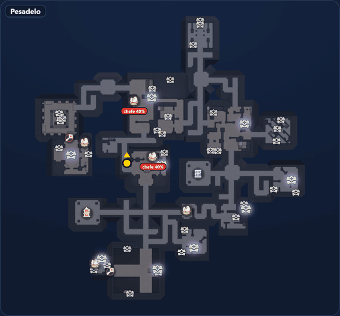
Gira com você
Para onde você olha fica para cima.
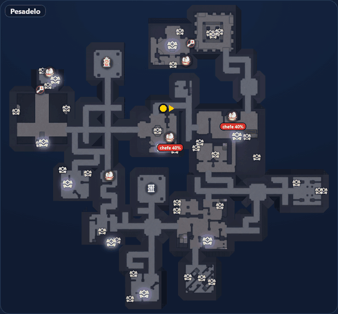
Mapa parado
Norte para cima, e a seta gira para onde você olha.